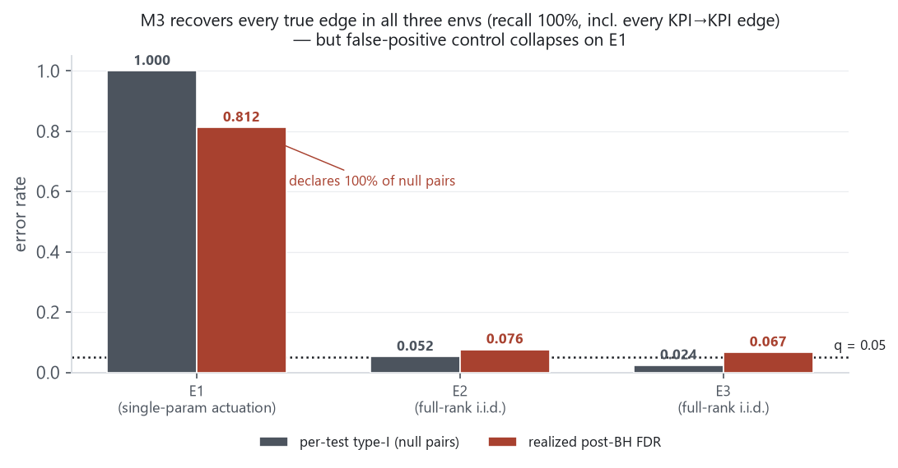
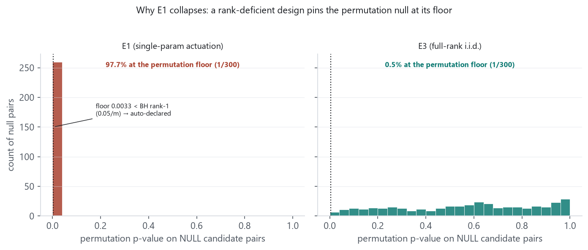
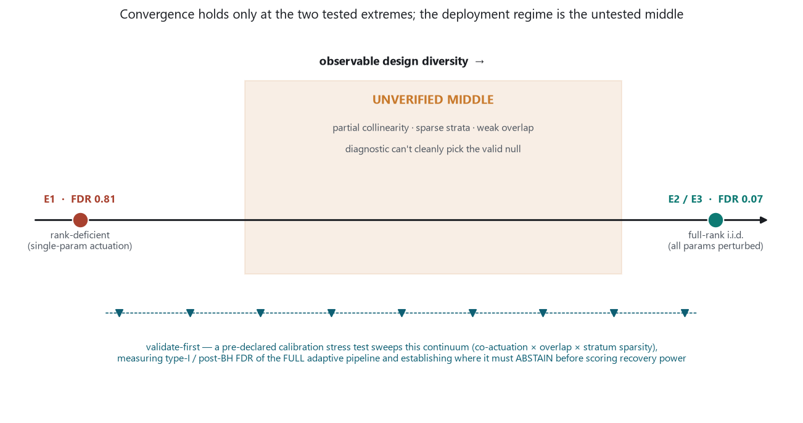

This delta tests a single question raised after the noise-robustness layer: can one discovery method serve the finalized engine, applied uniformly to every environment, rather than a method chosen per environment (which would require ground truth to select and is therefore benchmark overfitting)? The candidate was M3, the stratified conditional-CI method that recovers E2's co-parent-gated harmful edge. Applied uniformly at fixed hyperparameters, M3 recovers every true edge on E1/E2/E3 including every KPI→KPI edge (recall 100%), but its false-positive control collapses on E1 (realized FDR 0.81, declaring 100% of null pairs) while remaining nominal on E2/E3. The cause is E1's single-parameter actuation design (rank-deficient inputs), which breaks M3's permutation null. A structured multi-persona review then converged on one mechanism — design-adaptive M3 — but a critical review established that this convergence is only evidenced at the two tested extremes, leaving the deployment-relevant middle unverified. The report records the decision: adopt design-adaptive M3 with fail-closed abstention as the primary hypothesis, and validate it with a calibration stress test across the design-diversity continuum before treating it as settled. All work here is truth-free DEV analysis; nothing frozen is changed.
reports/2026-09-07-harmful-edge-derisk-and-noise-robustness/ (M3 recovery of P0→K5,
the FP-calibration FAIL and its downstream inertness for E2's single-control decision, the E3 multi-step
world model, and the noise-robustness sweep). That report closed the E2 discovered-arm loop for a
single-control decision; this one asks whether the discovery method generalizes into a single
engine. Method landscape unchanged: RCoT-v2 frozen (E2 skeleton), partial-correlation frozen (E1 + E3
exact-linear), M3 a DEV prototype (the gated edge).
The finalized engine needs a discovery stage that is one fixed procedure applied identically to every environment. Selecting a different method per environment based on which recovers best requires knowing the true graph — unavailable at deployment — so per-environment selection is benchmark overfitting, not a methodology. The three benchmarks already show that neither of the frozen linear/kernel methods is universal: partial-correlation and RCoT-v2 (kernel conditional independence under full conditioning on the other 13 candidates) recover P0→{K0,K1,K2} but miss the co-parent-gated harmful edge P0→K5 (0/10 seeds) — the signal (~1% marginal variance, gated by P6/P7) is not in the marginal or in a globally-conditioned CI test. M3 recovers it (20/20). The open question was whether M3, conversely, is a strict superset: does it also recover the E1 and E3 edges (including KPI→KPI) and keep false positives controlled, at its fixed hyperparameters?
M3 was applied uniformly to E1, E2, E3 at its fixed hyperparameters (NC=6, NB=8, min/stratum=40, B=299, BH q=0.05; no per-environment tuning). The statistic for a candidate–target pair is
The only code change from the E2 version was generalizing the hardcoded 14-candidate shape to n_cand = X.shape[1]; the statistic, null, shared-null factorization and per-(seed,target,i) RNG seeding are unchanged. A correctness gate confirmed this: the generalized code reproduces the frozen 20-seed E2 records bit-for-bit (max|ΔS*| = 0, max|Δp| = 0 over 168 records; P0→K5 at the permutation floor both seeds), so the E1 behaviour below is a real property of the method, not an artifact of the generalization. Results were re-scored from raw records independently of the run summary.
| Env (design) | Recall (all true edges) | KPI→KPI recall | Per-test type-I | Null-p at floor | Post-BH FDR |
|---|---|---|---|---|---|
| E1 (single-param actuation) | 100% | 2/2 | 1.0000 | 97.7% | 0.8125 |
| E2 (full-rank i.i.d.) | 100% | n/a (none) | 0.0522 | — | 0.0760 |
| E3 (full-rank i.i.d.) | 100% | 3/3 | 0.0237 | 0.5% | 0.0667 |

E1's dataset uses single-parameter actuation per step (one knob perturbed at a time), producing a low-diversity, strongly inter-dependent input design. Under this design, after M3 stratifies on a variable and bins a candidate, the target shows between-bin variance for every candidate, and the within-stratum conditional-permutation null cannot separate real conditional dependence from design-induced spurious structure: 97.7% of null-pair p-values are pinned at the permutation floor 1/300 = 0.00333. Because that floor sits below the BH rank-1 threshold (0.05/m), floored nulls are auto-declared and BH admits the rest — FDR 0.81. E2/E3 sample all parameters i.i.d. per step (full-rank randomized design), the null is valid, and M3 is clean. The failure is a property of the design meeting M3's aggressiveness, not of the edge types (KPI→KPI recall is perfect on both E1 and E3) and not a bug (correctness gate passed).

Given that M3 is not a strict superset, the question becomes what the single engine should be. Five research positions were solicited under distinct lenses, then a separate reviewer critiqued the synthesis. The point of interest is not the vote but the mechanism they converge on.
| Lens | Verdict | Core claim |
|---|---|---|
| Unifier | single-method | M3's E1 failure is a null-calibration problem under rank-deficient design; replace naive shuffling with a design-adaptive null (block/residual permutation conditioned on the actuation support, or Model-X knockoff) + studentized max + drop degenerate strata. |
| Experimental design | single-method | The lever is data collection: full-rank / factorial / interventional actuation makes M3 clean everywhere (E5 is interventional anyway). Feasible in a non-RT rApp; not in a near-RT xApp; fails if forced purely passive. |
| Bounded ensemble | bounded ensemble | Two members (partial-corr for linear/overt + M3 for gated) keyed by a failure-mode taxonomy (linearity × design-rank × signal-locality) — bounded by axes, not environments. Aggregate by "trust the member whose null is valid here," not voting. |
| Systems realism | bounded ensemble | The compute constraint does not bind discovery: it is offline periodic structure-learning (non-RT rApp, minutes/batch); 2–3 statistical tests are cheap. The real constraint is the online world-model + planner path. |
| Adaptive single | hybrid | M3 + a diagnostic-gated null-switch is a two-member router in disguise; the switch boundary is itself a place to be silently wrong at ambiguous diagnostics. |
All five reduce to the same mechanism: M3 plus a design-aware null/calibration layer, with the failure regime detected from observable design diagnostics (design rank, null-p-at-floor fraction). The systems-realism lens separately removes the constraint that motivated avoiding an ensemble in the first place: discovery runs offline, so "several cheap statistical tests" is not the cost class of "several ML models on the control loop."
The adversarial review rejected the framing that this is settled. Its load-bearing point: the observed agreement holds only at the two tested extremes — rank-deficient E1 and full-rank E2/E3. The deployed system will operate in the middle: partial collinearity, sparse strata, weak overlap, imperfect actuation models. That is precisely where the design diagnostic may not cleanly indicate which null is valid, and where selecting the stratifier and calibration rule from the data can further distort calibration. The recommendation currently extrapolates across that region without evidence. Corollaries:

This resolves the five stated objections to an ensemble as follows:
Validate-first (gates the whole direction). A pre-declared calibration stress test that sweeps the design-diversity continuum — increasing co-actuation / condition number × conditioning overlap × stratum sparsity, from E1-like to E2/E3-like — measuring per-test type-I error and post-BH FDR of the complete adaptive pipeline (including data-driven stratifier and null selection), and establishing where the pipeline must abstain before recovery power is scored. If validity holds across the continuum, the single-method engine is earned. If it fails in the ambiguous middle, the honest outcome is a bounded diagnostic router or redesigned experimentation — not "one method." Either way, this makes the previously-deferred M3 FDR / multiplicity fix binding rather than optional.
scratchpad/:
m3_superset/ (m3_general.py dimension-generalized method, gate_e2.py
correctness gate, run.py, results_e1.json, results_e3.json,
VERDICT.md), p0k5_fp_calibration/ (E2 20-seed calibration, results.json).
Figures regenerable via make_figs.py (reads those JSONs live). All numbers re-scored from raw
records independently of run summaries; the correctness gate was re-run independently
(max|Δ| = 0). The five research positions and the adversarial review were
produced by separate agents; their content is summarized, not quoted, and none was used to select a method
by ground truth. Nothing here changes a frozen constant, mechanism, gate, or package module.
· reports/2026-09-08-discovery-method-unification-and-m3-superset/